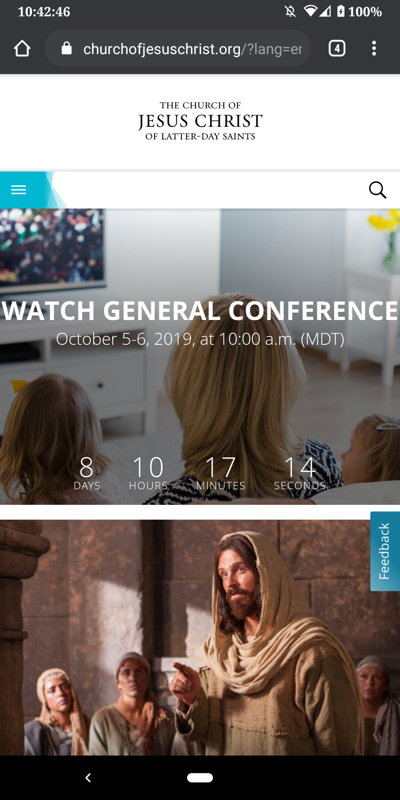
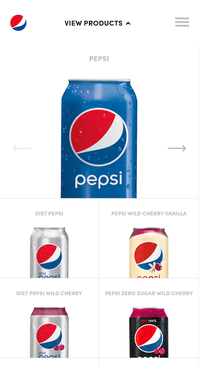

Alignment
spotify.com
The design principle of alignment is when different elements of a page are aligned in relation to each other an another part of the page. This can occur both vertically and horizontally. The design principle of alignment is an important element to consider in web design because it helps the content of a page to look neat and consistent making it easier to navigate and read. A website that uses the design principle of alignment well is the Spotify mobile browsing site.
White Space and Clean Design
churchofjesuschrist.org The design principle of white space is the practice of leaving space between type, images and any other compnents on a page that make it easier for the viewer to comprehend what is being displayed. A webiste that demonstrates this principle well is The Church of Jesus Christ of Latter-day Saints. This principle is used in the way that they leave a good amount of space between different posts and links on the home page clearly defining which post is which.
Repetition
pepsi.com/products The design principle of visual repetition is defined as using the same or similar components throughout the design. This principle brings unity and consistency to the page. A good example of repetition used in mobile browsing is with the mobile site for Pepsi. Pepsi uses the design element of repetition by using their logo in multiple places on the page. Using the logo like this helps with branding and to enhance their product to the viewer making it more memorable and noticable to them.